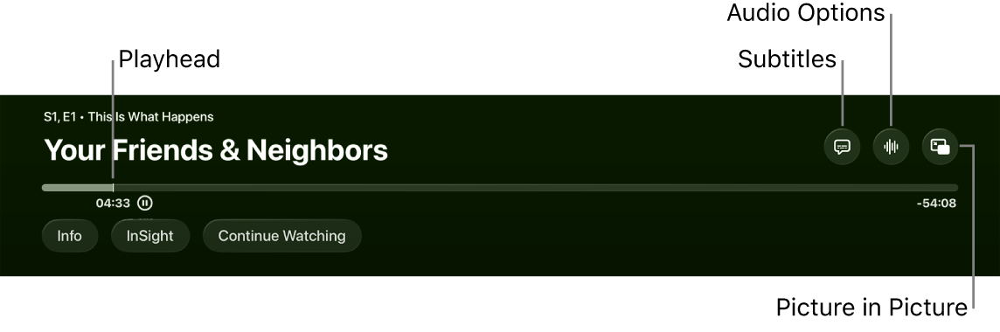

Huidige Pleya — jouw foto
De actuele foto’s van jouw televisie staan in dit gesprek. Ze tonen de grote witte pauzeknop en de rij kleine iconen. De persoonlijke foto’s worden niet opgenomen in dit openbare ontwerpbestand.
Veel kleine iconen met wisselende gewichten; een groot wit pauzevlak tussen de overige acties.
Actuele Apple-referentie

Officiële Apple TV-gebruikershandleiding: titel, drie glasacties, tijdlijn en tekstknoppen. De lijnen in dit referentiebeeld zijn toelichtingen van Apple.
Apple-bron